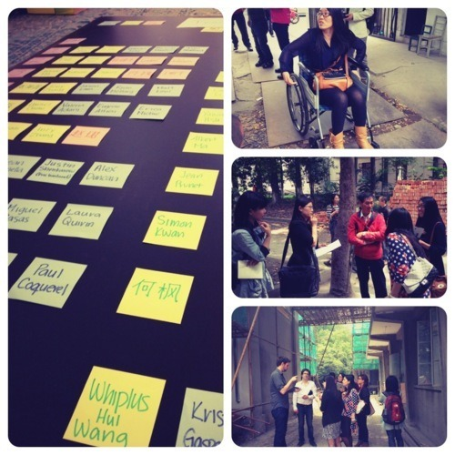
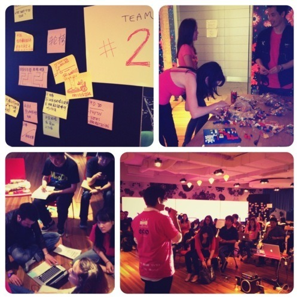

Designing Shanghai 2012
If my week-days were busy, my weekends usually packed, literally. This last Saturday was no exception either.
And since I have to dutifully record a journal for the school assignment, I might as well share this particular Saturday. If UX or creating human centered design is your thing, then the Designing Shanghai event might be in your alley of interest.
Back by popular demand, this year UX Day Shanghai was held by Techyizu at the Haworth on 南京路1788号. This is one of those grass-root initiated event where designers, thinkers, hackers, students, and basically anyone who’s interested in creatingbetter shanghai, get together and try to push for more design thinking for social impact.

The one-day workshop basically structured in two parts, morning talks by renowned innovative and design firms like frog, IDEO, CBI China Bridge and Continuum sharing their insights, approach and methodology. Then followed by afternoon workshop where participants/teams are dispatched to do a city-wide research & rapid prototyping exercise, exploring solutions across digital, physical and service design. And upon returning to the venue, teams will synthesize their research, brainstorm solutions and create rapid prototypes to share with the rest of the group.
After successful initial prototype last year, we decided to focus this year challenge toward ’Social Inclusion’ by ways of making Shanghai a better city for people with disabilities.
I was mentoring on Design for Mobility, which basically focus on tackling the challenge around how the city infrastructure are generally not as friendly as it should be to those with physical disabilities. Navigating sidewalks, overpasses, public transportation access could be very difficult (if not damn near impossible) if one is on wheelchair, visually impaired or older than 50 years of age.
Another design challenge that we were keen to tackle were:
- Elderly Care in an Aging Society (Shanghai population is getting older and there aren’t enough attention being paid to its senior citizens)
- Designing for Special Needs in Education (think school and better education system for Autistic children, for example)
- Employment for the Disabled (How to overcome the rampant discriminations over people with disabilities in China and give them an opportunity to have better lives)
The research locations were spread across the city; from newly erected space designed for disable persons, elderly house development, to school for autistic children, to metro stations (for mobility), to equal employment opportunities around pocket of districts in Shanghai (job centers), etc.
The goal of the UX Day Shanghai is not to push any agenda to the decision makers, even though that would be ideal, but is more about creating awareness. Believe you me, some teams actually came up with pretty decent (innovative), if not daring, recommendations that are worth exploring.
The key takeaway from this exercise, is not only to ‘connect the dots’ but also for us to be more aware of the environment and the place in which we live in related to others and society in general.
And yes, anything big should start as simple as an idea.